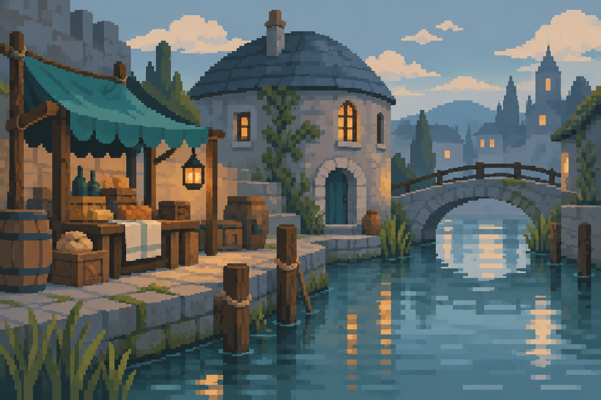

Art direction study · decorative motion only
A softer kind of calamity.
Chunky shapes, warm lanterns, and a paper-covered troublemaker. This study tests a simpler pixel language at the size it would occupy in the game.

Scene study · fewer shapes and colors, with space for the story.
The lower canals · enemy study
Ledger Rat
Small teeth.
Big paperwork problem.
Health140 / 140
B.U.R.S.A.R. observes: “That receipt appears to be biting.”
Four held frames. Motion is decorative and never advances combat.
Reduced-motion preference: the idle animation stays still.
The direction
- Rounded, expressive silhouettes and broad pixel clusters.
- Slate blue, dusty teal, moss, cream, and a little amber light.
- Small idle loops, ear flicks, and spell sparks. Readable type stays steady.
- Simple frames and symbols carry the system identity.